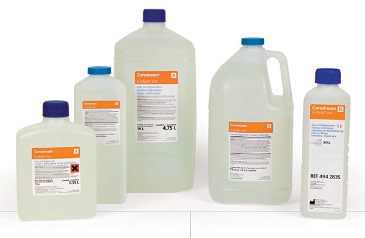

Carestream x-omat y gbx químicos de procesamiento

DESCRIPCIÓN:
Uno de los elementos clave en la cadena de formación de imagen son los químicos de procesamiento. Éstos pueden afectar el contraste, la velocidad, la tonalidad, velo, la densidad máxima y la presencia de defectos en la imagen radiográfica.
CARACTERÍSTICAS:
La familia de químicos de procesamiento Carestream fue desarrollada en base a una extensa experiencia en el diseño y manufactura de sistemas película-pantalla-químicos.
De ahí que los químicos Carestream estén formulados para favorecer la confianza en el diagnóstico; el flujo de trabajo, la seguridad, aspectos ambientales, así como su presupuesto.
No existe un solo químico que pueda satisfacer las necesidades de todos los usuarios en relación al método de revelado, rendimiento, aspectos ambientales y costo. Por esta razón Carestream ofrece toda una familia de productos químicos con diferentes características.
APLICACIONES:
Tipos de químicos:
• Químicos para revelado automático CARESTREAM X-OMAT RP
Excelentes resultados con película en:
– Radiografía general.
– Láser.
– Oncología.
– Mamografía.
– Películas de otros fabricantes.
Diseñados para utilizarse en ciclos de procesamiento estándar, rápido o extendido.
• Químicos para revelado manual CARESTREAM GBX:
– Proveen gran flexibilidad en el proceso manual, tanto para películas sensibles al azul como ortocromáticas.
– Mezcla simplificada.
– No requieren iniciador.
• Iniciador para revelador X-OMAT:
– Ayuda a mantener el balance y la consistencia en el químico revelador del tanque de la procesadora.
– Cuando se prepara químico “fresco” y se llena el tanque de proceso, la actividad química del revelador es mayor comparada con la de uno ya “sazonado”. El iniciador ayuda a minimizar las diferencias químicas y sensitométricas entre un revelador “fresco” y uno “sazonado”, con lo que se obtienen condiciones de procesamiento más consistentes y homogéneas.
Números de catálogo:
|
Tipo de revelado |
Descripción |
Número de catálogo |
|
Automático |
Revelador RP X-OMAT para 38 l |
124 9259 |
|
Automático |
Fijador RP X-OMAT para 38 l |
886 8804 |
|
Manual |
Revelador GBX para 19 l |
190 0984 |
|
Manual |
Fijador GBX para 19 l |
190 2485 |
DATOS COMPLEMENTARIOS: Si desea obtener más información sobre los productos químicos Carestream, favor de contactar al representante CARESTREAM de su localidad o a:
CARESTREAM
Teléfono: (33) 3134-6200
o bien, visítenos en: www.carestream.com.mx